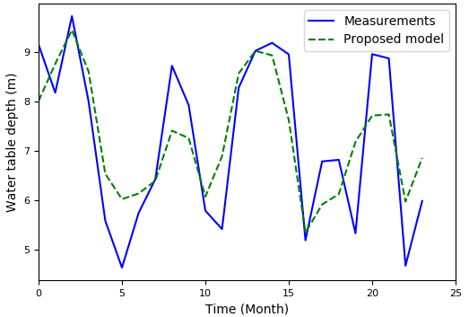
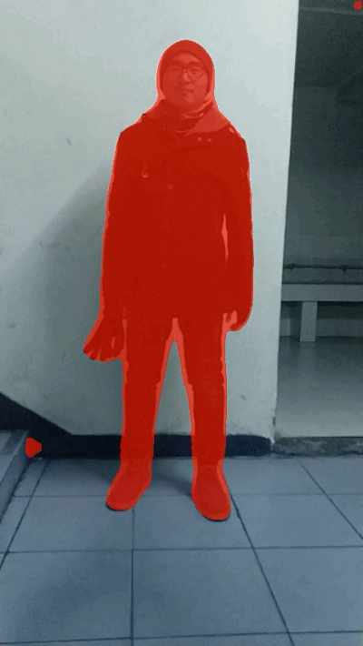

I'm an Applied Mathematics undergrad from Wuhan University, with my interest focus on Data Science, Computer Vision, Deep Learning and Convex Optimization.
Currently, I'm a research assistant with Xiaoping Zhang at WHU, and a R&D engineer intern at Farsee2 .
Currently applying for Ph.D. Also open to one-year research position. If you're interested, don’t hesitate to contact me. Here's my Resume.

Developing a Long Short-Term Memory (LSTM) based Model for Predicting Water Table Depth in Agricultural Areas
Jianfeng Zhang, Yan Zhu, Xiaoping Zhang, Ming Ye, Jinzhong Yang, Journal of Hydrology
[paper]
[code]
Predicting water table depth over the long-term in agricultural areas presents great challenges because these areas have complex and heterogeneous hydrogeological characteristics, boundary conditions, and human activities; also, nonlinear interactions occur among these factors. Therefore, we developed a new time series model based on Long Short-Term Memory (LSTM) in this study as an alternative to computationally expensive physical models.In this study, the proposed model was applied and evaluated in five sub-areas of Hetao Irrigation District in arid northwestern China using data of 14 years (2000-2013). 14 years of data are separated into two sets: training set (2000-2011) and validation set (2012-2013) in the experiment. The proposed model achieves higher R2 scores (0.789-0.952) in water table depth prediction, when compared with the results of traditional feed-forward neural network (FFNN), which only reaches relatively low R2 scores (0.004-0.495). Furthermore, we discussed the validity of the dropout method and the proposed model’s architecture. Through experimentation, the results show that the proposed model’s architecture is reasonable and can contribute to a strong learning ability on time series data.


Deep Grabcut (DeepGC) [arXiv] [code]
We replicate "Deep Grabcut for Object Selection", this paper proposes a segmentation approach that uses a rectangle as a soft constraint by transforming it into an Euclidean distance map. A convolutional encoder-decoder network is trained end-to-end by concatenating images with these distance maps as inputs and predicting the object masks as outputs. We implement this paper using PyTorch and trained this model using Pascal Voc 2012 and SBD datasets.
Chinese_Poem_Writer [code]
We build a Chinese poem writer based on Temporal Convolutional Networks (TCN). Recently a research group indicates that a simple TCN architecture outperforms RNNs across a diverse range of tasks and datasets, while demonstrating longer effective memory. Therefore, we build this Chinese poem writer using TCN.

Video Object Segmentation Framework [code will be available soon]
We build a Video Object Segmentation Framework. It can perform key frame extraction based on VGG16 and interactive object segmentation for online fine-tune. Only 200~3000 iters of online fine-tune can reach very good video object segmentation results.
End to end network image text detection and recognition. [code will be available soon]
We build a faster-rcnn like model for end to end network image text detection and recognition. We rank 13/1488 on ICPR MTWI 2018 Challenge on Tianchi